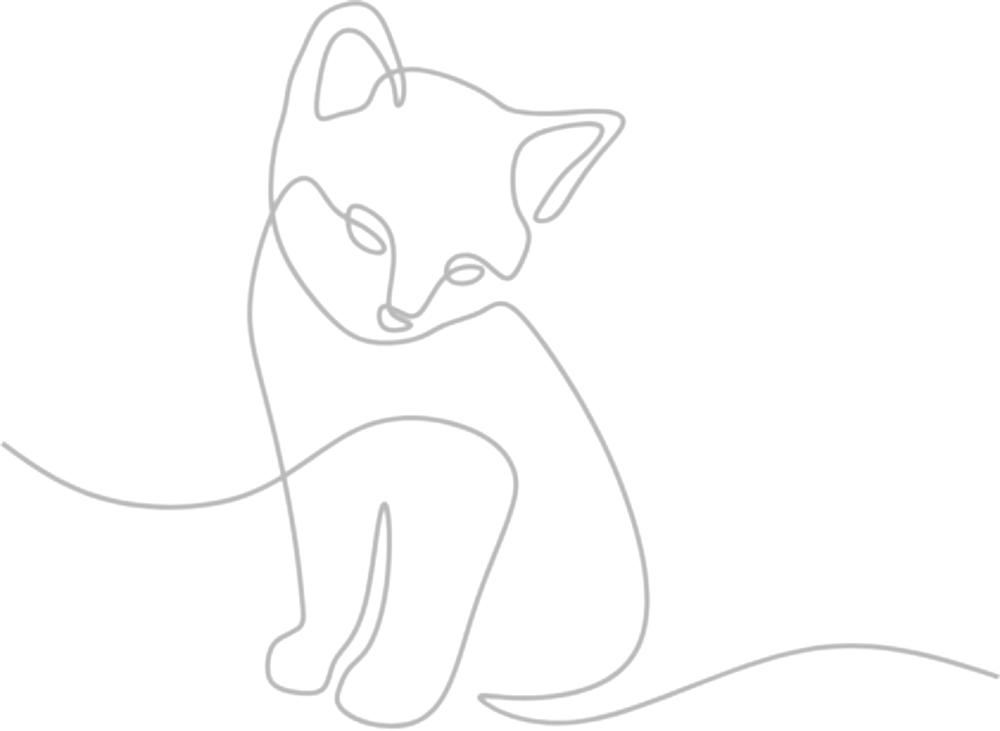

The Midnight Archive
Where the unspoken finds a home
Enter the Archive
Explore stories, fragments and worlds written after dark.
STORIES
short stories & fictional worlds
FRAGMENTS
thoughts, quotes & pieces of unfinished stories
THE ARCHIVE
step deeper into my world
